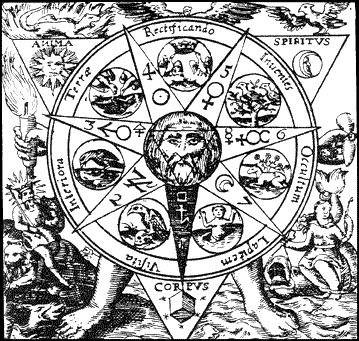
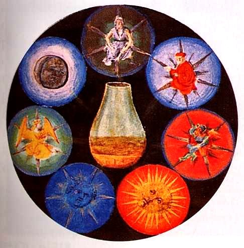
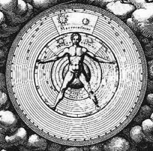
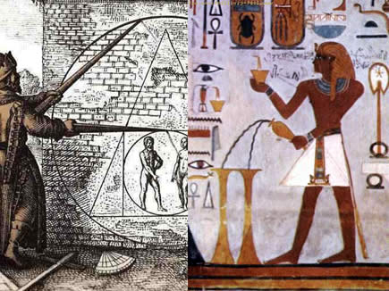

NOVEDADES
Alquimia:
En la historia de la ciencia, la alquimia (del árabe الخيمياء [al-khīmiyā]) es una antigua práctica protocientífica y una disciplina filosófica que combina elementos de la química, la metalurgia, la física, la medicina, la astrología, la semiótica, el misticismo, el espiritualismo y el arte. La alquimia fue practicada en Mesopotamia, el Antiguo Egipto, Persia, la India y China, en la Antigua Grecia y el Imperio romano, en el Imperio islámico y después en Europa hasta el siglo xviii, en una compleja red de escuelas y sistemas filosóficos que abarca al menos 2500 años.
Alquimia y astrología
La alquimia en Occidente y otros lugares donde fue ampliamente practicada estaba (y en muchos casos aún está) íntimamente relacionada y entrelazada con la astrología tradicional al estilo griego-babilónico. En muchos sentidos fueron desarrolladas para complementarse una a la otra en la búsqueda del conocimiento oculto. Tradicionalmente, cada uno de los siete cuerpos celestes del sistema solar que conocían los antiguos estaba asociado, ejercía el dominio sobre, y gobernaba En el hermetismo está relacionada tanto con la astrología como con la teúrgia.
La alquimia como investigación de la naturaleza
La percepción popular y de los últimos siglos sobre los alquimistas, es que eran charlatanes que intentaban convertir plomo en oro, y que empleaban la mayor parte de su tiempo elaborando remedios milagrosos, venenos y pociones mágicas. Fundaban su ciencia en que el universo estaba compuesto de cuatro elementos clásicos a los que llamaban por el nombre vulgar de las sustancias que los representan, a saber: tierra, aire, fuego y agua, y con ellos preparaban un quinto elemento que contenía la potencia de los cuatro en su máxima exaltación y equilibrio.
La alquimia como disciplina espiritual y filosófica
Los alquimistas sostenían que la piedra filosofal amplificaba místicamente el conocimiento de alquimia de quien la usaba tanto como fuera posible. Muchos aprendices y falsos alquimistas, tenidos por auténticos alquimistas, gozaron de prestigio y apoyo durante siglos, aunque no por su búsqueda de estas metas ni por la especulación mística y filosófica que se desprendía de su literatura, sino por sus contribuciones mundanas a las industrias
Categorias
La alquimia en la época científica
De la alquimia occidental surge la ciencia moderna. Los alquimistas utilizaron muchas de las herramientas que se usan hoy. Estas herramientas eran a menudo fabricadas por ellos mismos y podían estar en buen estado, especialmente durante la Alta Edad Media. Muchos intentos de transmutación fallaban cuando los aprendices de alquimia elaboraban sin conocer compuestos inestables, lo que se veía empeorado por las precarias condiciones de seguridad.
La alquimia como objeto de investigación histórica
La historia de la alquimia se ha convertido en un vigoroso campo académico. A medida que el oscuro lenguaje hermético de los alquimistas va siendo gradualmente «descifrado», los historiadores van haciéndose más conscientes de las conexiones intelectuales entre esa disciplina y otras facetas de la historia cultural occidental, tales como la sociología y la psicología de comunidades intelectuales, el cabalismo, el espiritualismo, el rosacrucismo y otros movimientos místicos, la criptografía, la brujería, y la evolución de la ciencia y la filosofía.
La alquimia en la historia
Pueden distinguirse al menos dos tendencias principales, que parecen ser ampliamente independientes, al menos en sus primeras etapas: la alquimia china, centrada en China y su zona de influencia cultural, y la alquimia occidental, cuyo centro se desplazó a lo largo del tiempo entre Egipto, Grecia y Roma, el mundo islámico, y finalmente de nuevo Europa. La alquimia china estaba íntimamente relacionada con el taoísmo, mientras que la alquimia occidental desarrolló su propio sistema filosófico, con relaciones solo superficiales con las principales religiones occidentales. Aún está abierta la cuestión de si estas dos ramas comparten un origen común o hasta qué extremo se influyeron una a la otra.
La alquimia en el Antiguo Egipto
El origen de la alquimia occidental puede situarse en el Antiguo Egipto, a partir de la confluencia de la ciencia sacerdotal con la filosofía helenística en la época ptolemaica.2 No obstante, a pesar de que el corpus simbólico clásico pertenezca a esta última etapa, la cosmogonía y la idea de naturaleza del Egipto antiguo están en el origen de muchas ideas alquímicas, ya que la metalurgia y el misticismo estaban inexorablemente unidas en el mundo antiguo. La alquimia, la medicina e incluso la magia eran aspectos de la religión en el Antiguo Egipto3
La alquimia en la era moderna y el Renacimiento
El nombre más importante de este periodo es Paracelso (1493-1541), quien dio a la alquimia una nueva forma, rechazando parte del ocultismo que había acumulado a lo largo de los años y promoviendo el uso de observaciones y experimentos para aprender sobre el cuerpo humano. Paracelso rechazó las tradiciones gnósticas pero mantuvo mucho de las filosofías hermética, neoplatónica y pitagórica; sin embargo, la ciencia hermética tenía tanta teoría aristotélica que su rechazo del gnosticismo era prácticamente insignificante. En particular, rechazó las teorías mágicas de Flamel y Agrippa. Paracelso no se veía a sí mismo como un mago y desdeñaba a quienes lo hacían.29
El declive de la alquimia occidental
La desaparición de la alquimia occidental se debió al auge de la ciencia moderna con su énfasis en la rigurosa experimentación cuantitativa y su desdén hacia la «sabiduría antigua». Aunque las semillas de estos sucesos fueron plantadas ya en el siglo xvii, la alquimia aún prosperó durante unos doscientos años, y de hecho puede que alcanzase su apogeo en el siglo xviii. Tan tarde como en 1781 James Price afirmó haber producido un polvo que podía transmutar el mercurio en plata u oro. Igualmente otro alquimista conocido era el arzobispo húngaro Jorge Lippay (1600-1666),